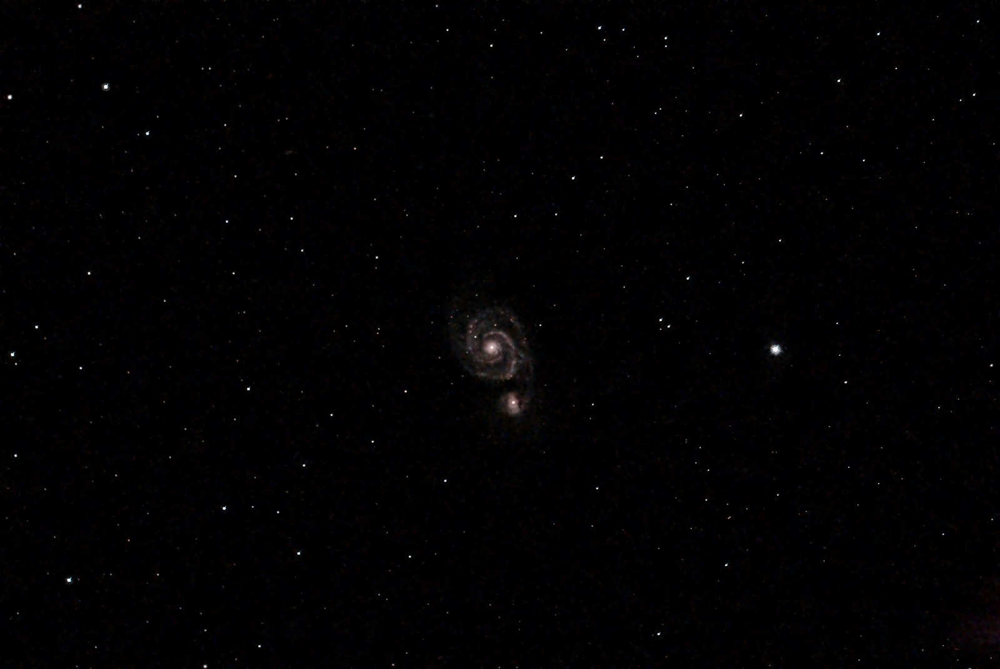
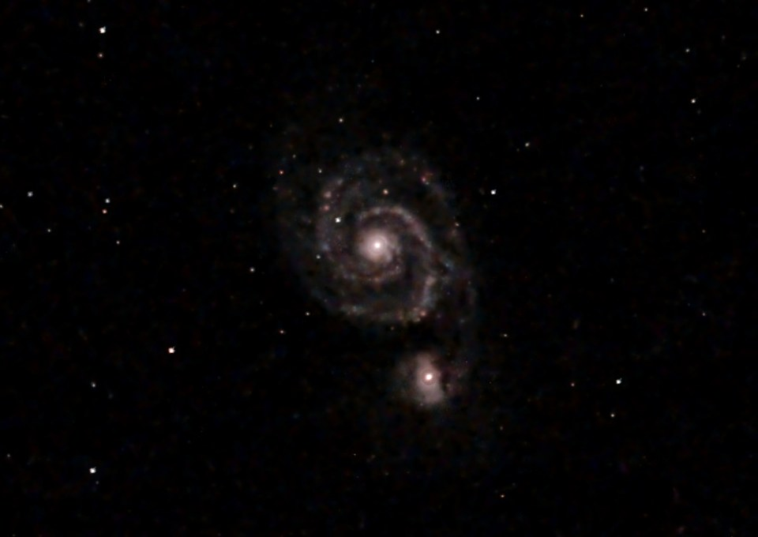

Was enthalten ist
Eine vollständige Sitzung eines Celestron Origin, so wie das Teleskop sie gespeichert hat: 41 Einzelaufnahmen zu je 25 Sekunden (insgesamt 17 Minuten Licht), aufgenommen am 9. Juli 2026 in einem Vorstadtgarten, dazu die Flat-, Dark- und Bias-Aufnahmen, die der Origin für diese Nacht gemacht hat. Das fertige Stack des Origin selbst ist nicht dabei, das Bild, das Sie erhalten, stammt also von OriginStack.
- Das Objekt
Die Whirlpool-Galaxie (M51) und ihre Begleiterin NGC 5195 in einem Weitfeld: Bei der Brennweite von 335 mm des Origin erscheint das Paar klein in der Mitte eines Sternfelds. So sieht eine echte Origin-Aufnahme aus, was einen fairen Test ergibt.
- Standort entfernt
Die Dateien enthalten keine GPS-Position, keine Höhe und keine Luftmasse, und die Seriennummer der Kamera ist ersetzt. Die Pixel sind unverändert, und das Stack ist Bit für Bit dasselbe wie mit den Originaldateien. Aufnahmedatum und Uhrzeit bleiben erhalten.
- Keine ganze Nacht
Mit 41 Aufnahmen ist die Sitzung kurz, das Ergebnis rauscht daher stärker als ein Stack aus einigen hundert. Es reicht, um jeden Schritt in Aktion zu zeigen; die Galerie und die Vorher-Nachher-Vergleiche zeigen, was eine längere Nacht liefert.
Schritt für Schritt
- 1. OriginStack installieren
Laden Sie das Installationsprogramm für Ihr System im Abschnitt Installation auf der Startseite herunter (Windows, Mac oder Linux; kein Python nötig) und öffnen Sie die App.
- 2. Das Beispiel herunterladen und entpacken
Laden Sie OriginStack-sample-whirlpool.zip (450 MB) herunter und entpacken Sie die Datei. Sie erhalten einen Ordner namens
sample_whirlpoolmit den Aufnahmen. Lassen Sie die Dateien unverändert: nichts umbenennen oder verschieben.- 3. Den Ordner auswählen
Wählen Sie in OriginStack den Ordner
sample_whirlpoolals Ordner der Light-Aufnahmen. Die App zählt die Aufnahmen (41 Lights) und liest das Objekt, Whirlpool-Galaxie, aus derinfo.jsonder Sitzung. Lassen Sie Was haben Sie aufgenommen? auf „Automatisch erkennen“ und Wie soll es laufen? auf „Volle Qualität“.- 4. Auf Start klicken
Die Phasenleiste durchläuft die Stufen: jede Aufnahme verarbeiten und bewerten, ausrichten, stacken und dann die abschließenden Schritte. Das Protokoll zeigt dieselben Zeilen wie die Befehlszeile, und die Vorschau rechts wird bei jedem Meilenstein aktualisiert. Auf einem Laptop mit 8 Kernen dauerte der ganze Lauf 69 Sekunden; ein langsamerer Rechner braucht einige Minuten.
- 5. Das Ergebnis ansehen
Sobald „Fertig“ erscheint, ist das gestackte Bild in der Vorschau zu sehen, und die Dateien liegen neben dem gewählten Ordner: das lineare Stack (
.fits), ein Vorschaubild (.jpg) und die verwendeten Einstellungen (_config.toml). Vergleichen Sie Ihr Bild mit dem unten.
Lieber im Terminal? Bei einer Installation aus dem Quellcode lautet derselbe Lauf python originstack.py -d sample_whirlpool -o whirlpool.fits.
Das zu erwartende Ergebnis
Alle 41 Aufnahmen werden verwendet (100 %) und zu einem Bild mit 2025×3025 Pixeln und 17,1 Minuten Licht gestackt. Ihres kann ein wenig abweichen, da die Einstellungen aus den Daten gewählt werden und sich von Version zu Version verbessern, aber es sollte dasselbe zeigen.


- Wenn Ihres ganz anders aussieht
Ein fast schwarzes Bild, ein starker Farbstich oder weniger als 41 gestackte Aufnahmen bedeuten meist, dass die Dateien unterwegs verändert wurden: ein Zip-Programm, das sie neu geschrieben hat, oder Aufnahmen, die aus dem Ordner verschoben wurden. Entpacken Sie erneut und versuchen Sie es noch einmal. Sieht es immer noch falsch aus, fragen Sie in den Discussions oder nutzen Sie in der App Problem melden, das Version, System und Protokoll für Sie einträgt.
Wie es weitergeht
- Das Aussehen ändern
Nach dem Lauf bietet die Leiste Streckung und Farbe über der Vorschau jede Streckung an; die Streckungsgalerie zeigt, was jede bewirkt. Auf JPEG anwenden speichert die gewählte.
- Abschließende Schritte aus- und einschalten
Das Feld Nachbearbeitungsschritte unter der Vorschau hat ein Kästchen für jeden Schritt, den der Lauf verwendet hat. Entfernen Sie einen Haken, dann werden nur dieser Schritt und die folgenden neu berechnet, sodass Sie sehen, was jeder Schritt beiträgt, ohne alles neu laufen zu lassen.
- Einzelne Aufnahmen ansehen
Klicken Sie in der Tabelle der letzten Aufnahmen auf eine Zeile, um diese Aufnahme einzeln zu sehen, während der Lauf weitergeht, und vergleichen Sie sie mit dem Stack, um zu sehen, was 41 Aufnahmen bringen.
- Dann Ihre eigenen Daten
Kopieren Sie einen Sitzungsordner von Ihrem Origin (oder sehen Sie sich andere Kameras an), wählen Sie ihn auf dieselbe Weise aus und klicken Sie auf Start. Die Origin-Anleitung erklärt, was in einem Sitzungsordner liegt und wie man das Ergebnis liest; die App-Seite geht jeden Bildschirm durch.